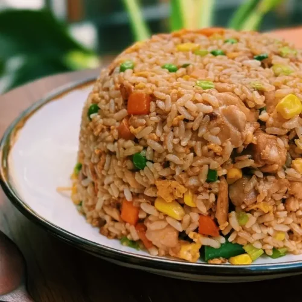

Fried Rice

Fried rice is a dish of cooked rice that has been stir-fried in a wok or a frying pan and is usually mixed with other ingredients such as eggs, vegetables, seafood, or meat. It is often eaten by itself or as an accompaniment to another dish. Fried rice is a popular component of East Asian, Southeast Asian and certain South Asian cuisines, as well as a staple national dish of Indonesia. As a homemade dish, fried rice is typically made with ingredients left over from other dishes, leading to countless variations. Fried rice first developed during the Sui dynasty in China.
Chow-mein
 Chow mein is a traditional Chinese dish made with egg noodles and stir-fried veggies. We love adding a protein and our favorite is chicken, but you can try different meat or tofu. This dish is pan-fried so the noodles get a nice crisp to them and then tossed in a yummy sauce. Chow mein is perfect for those nights when you don’t want to dirty too many pans or make a big mess of the kitchen.
Chow mein is a traditional Chinese dish made with egg noodles and stir-fried veggies. We love adding a protein and our favorite is chicken, but you can try different meat or tofu. This dish is pan-fried so the noodles get a nice crisp to them and then tossed in a yummy sauce. Chow mein is perfect for those nights when you don’t want to dirty too many pans or make a big mess of the kitchen.